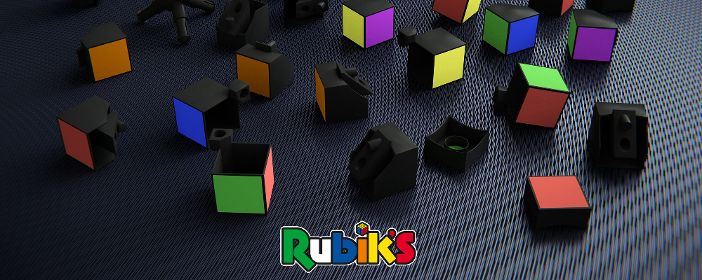
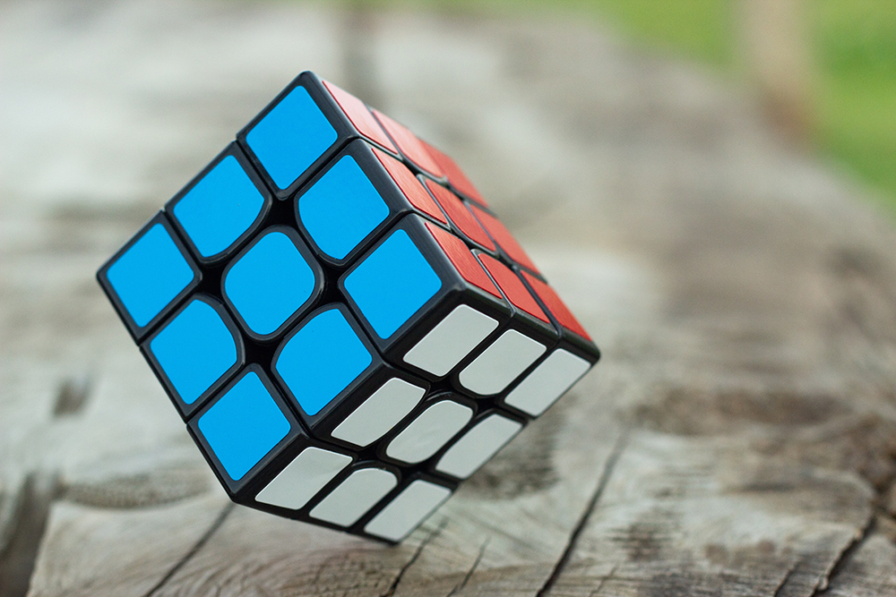

Le Rubik’s Cube (ou Cube de Rubik) est un casse-tête qui s’est rapidement répandu sur toute la planète au cours des années 1980. Au Canada francophone, il est nommé Cube Rubik (sans le «de») et l’appellation Rubik’s Cube est considérée comme exclusivement anglophone.
Il s’agit d’un casse-tête géométrique à trois dimensions composé extérieurement de vingt-six éléments qui, à première vue, semblent être des cubes pouvant se déplacer sur toutes les faces et paraissant libres de toute attache sans tomber pour autant. Un système d’axes, dont le mécanisme a été breveté par son auteur se cache au centre du cube.
Les différents modèles de Rubik’s Cube sont :
Le Rubik’s Cube est inventé le 19 mai 1974 par Ernő Rubik, un sculpteur et un passionné d’architecture hongrois, qui s’intéresse à la géométrie et à l’étude des formes en 3D. L’idée initiale était de construire un cube afin d’amener ses étudiants à deviner quel était son mécanisme interne, comment les petits cubes pouvaient tourner suivant trois axes tout en restant solidaires, et ainsi de les intéresser à la géométrie en trois dimensions.
Ce n’est qu’ensuite qu’il eut l’idée (grâce à la suggestion d’un ami) de colorer chaque face d’une couleur différente, constatant alors qu’après mélange, l’ordre initial du cube s’avérait extrêmement difficile à retrouver (une chance sur 43 252 003 274 489 900 000 à chaque rotation). Il eut alors l’idée de le commercialiser en tant que «casse-tête» géométrique et mathématique. Il faudra un mois à l’inventeur du Rubik’s Cube pour résoudre son propre casse-tête.
Pour plus d'informations sur l'histoire du Cube Rubik, consultez le site Wikipedia
Le Rubik’s Cube est un cube dont chaque face est divisée en neuf cubes miniatures qui peuvent tourner indépendamment les uns des autres.En fait le cube est composé d’un axe central portant les centres des six faces, de huit cubes de coin à trois faces visibles et de douze cubes d’arête à deux faces visibles. À l’état final, chaque face du cube de Rubik est d’une couleur homogène et différente des autres, mais la rotation indépendante de chaque face provoque un mélange des petits cubes de coin et d’arête.
Le but du jeu est, après avoir mélangé les six faces, de manipuler le cube pour tenter de lui rendre son apparence d’origine, avec les six faces de couleurs unies. Les couleurs des faces du cube original sont : blanc en face de jaune, vert en face de bleu, orange en face de rouge. Sur les versions non originales, les positions relatives des faces de couleurs et même parfois les couleurs peuvent changer.
La pratique qui consiste à résoudre le Rubik’s Cube le plus rapidement possible est le speedcubing. En utilisant la méthode la plus simple, on peut y arriver en moins d’une minute avec suffisamment d’entraînement. Les meilleurs le font en moins de dix secondes.
 ll existe différentes techniques, consistant à réaliser des séquences comportant une dizaine de mouvements. Les techniques les plus utilisées consistent à construire la «croix» d’une face avant de finir cette face. On termine ensuite les arêtes de la tranche intermédiaire. Puis on résout la dernière face en orientant puis permutant les cubes qui la constituent. Ces méthodes sont nommées Layer by Layer pour «couche par couche».
Le nombre de positions différentes est supérieur à 43 trillions. Ainsi, en passant en revue un milliard de combinaisons différentes par seconde, il faudrait plus de 1 370 ans pour toutes les épuiser. Ou encore, des Rubik’s cubes classiques (57 millimètres de côté) chacun dans une configuration différente pourraient recouvrir la surface entière de la Terre sur une hauteur d’environ six étages.
Plus précisément, il y a 252 003 274 489 856 000 combinaisons.